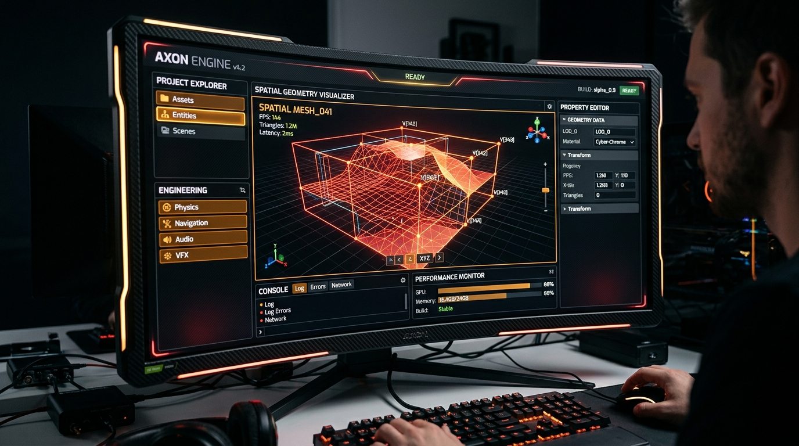

NexStudio
Games
A spatial game-studio universe rendered for the open web.
STACKReact · Three.js
ROLECreative Development
YEAR2026
STATUSLIVE / PRODUCTION

The
mission.
A WebGL-led experience where depth, light and movement become part of the brand language. Built to feel cinematic without sacrificing speed or clarity.
OPEN LIVE PROJECT ↗01 / EXPERIENCEA world, not a pageDESIGN · INTERACTION · SYSTEM
02 / OUTCOME60fps interactionFAST · RESPONSIVE · USEFUL